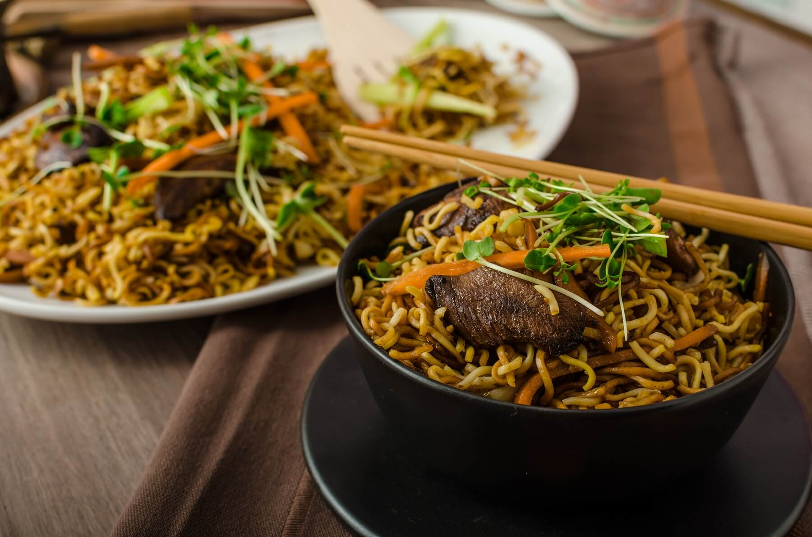

🔙Home
Ingredients
- Half a roast duck (e.g Chinese barbecued duck, or leftovers from your roast dinner)
- 2 stalks of celery, finely chopped
- 3 spring onions, finely chopped
- 1 small red chilli, finely chopped
- 1 slice of fresh ginger
- 2 tbsp vegetable oil
- 1 crushed garlic clove
- 400g cooked egg noodles
- 200g bean sprouts, rinsed
- 1 tbsp dry sherry (or Chinese rice wine)
- 2 tbsp oyster sauce
- 1 tbsp hoisin sauce
- 2 tbsp soy sauce
- Sugar to taste
Instructions
- Remove all the duck flesh from the bones, and finely slice it. Heat up some oil in your wok.
- Toss the ginger and garlic into the wok, and cook until golden before discarding (you just want to flavour the oil, not include them in the dish). Add half the spring onions, all the celery, and the chilli, then stir fry for 2 minutes on a decent heat. Add the duck, and stir fry for a further 2 minutes.
- Quickly heat the noodles through by sticking them in a bowl of boiling water and draining immediately, then add those to the wok too and toss well.
- Add the bean sprouts, and toss in the wok with all the other ingredients. Stir in the sauces, then serve in a bowl with a scattering of spring onions on top.
- Enjoy!
